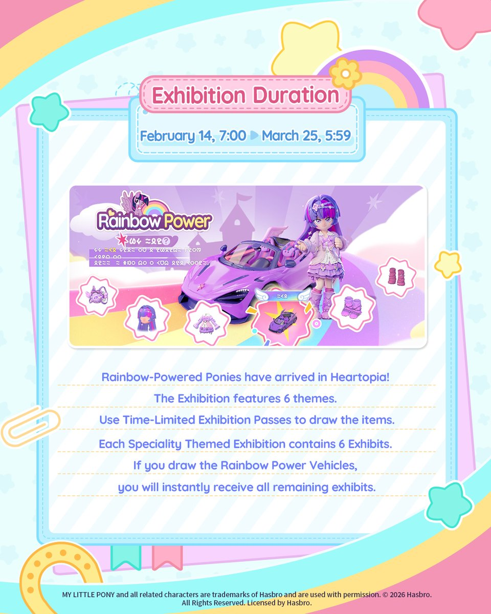
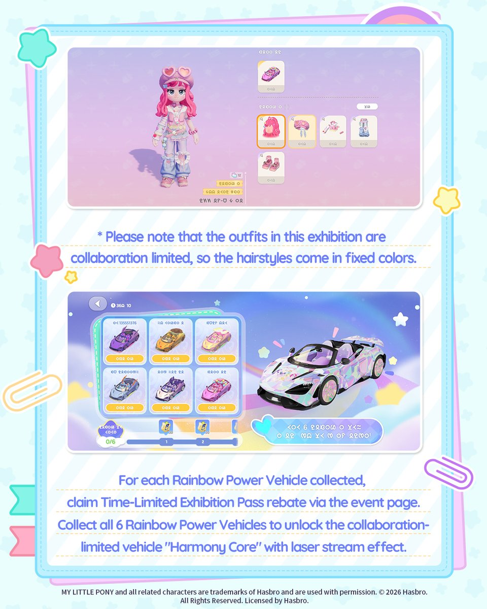
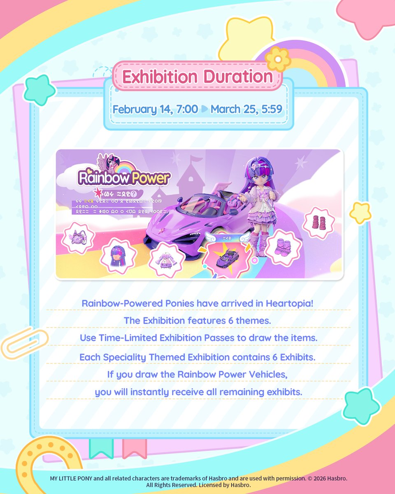
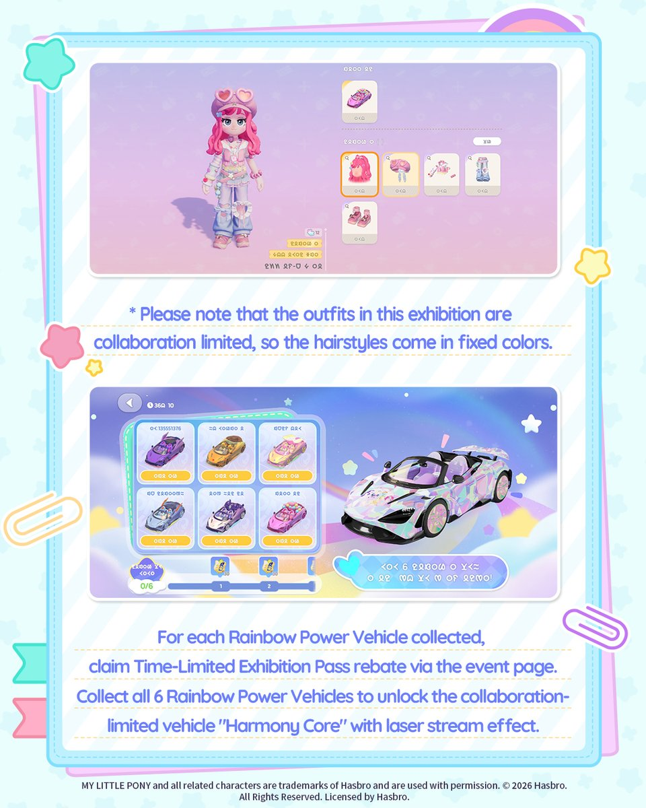

Collab hype is going full speed: Iupfan Williams and friends dropped a neon roundup of Heartopia + Nachisu MikuX raids, plus a note that the #Collaboration and #besties energy keeps the community looping for new drops.


12/02/2026 · Midday refresh with the latest #Heartopia community chatter, collab gallery shots, redeem codes, and Winter Frost egg intel.
Collab hype is going full speed: Iupfan Williams and friends dropped a neon roundup of Heartopia + Nachisu MikuX raids, plus a note that the #Collaboration and #besties energy keeps the community looping for new drops.
Cooking alert: after a harvest-heavy morning, Mairiro finally turns to the stove—truffle on deck and a reminder that Heartopia’s seasonal recipes are just as relaxing as its gathering loop.
 



New Pony collab assets + fan raid shots keep the gallery bright—these pics capture the Valentine’s energy before the Feb 14 launch.
VG247 and Heartopia.gg both highlight the pre-launch login puzzles that pump out limited-time passes, while the Feb 14–Mar 15 window keeps filling the Tree of Harmony with daily watering.
IGN and PocketTactics both confirm that the newest redeem codes (like q6p9m4a7k) are still live—grab extra Wishing Stars, Mermaid Fish Attractors, and Fertilizer while this batch lasts.
q6p9m4a7k → Wishing Star ×5, Mermaid Fish Attractor ×3, Fertilizer ×10 (valid until 31 Mar 2026).r4p8n6m2q9, heartopia10m, lifewithline, happy2026, plus k7m9q2a8l5 and older reward codes—try them while they remain active.Expired/disabled codes (like mylittlepony) remain listed on PocketTactics if you’re cross-checking what’s no longer redeemable.
VG247 just added the Day 12 location to their Onsen Egg Promise guide—photographing each new egg earns Wishing Stars plus Fashionwave Tokens, and the hunt drops a new collectible once per real calendar day.
Keep checking VG247’s tracker for Day 13 and beyond—most new spots stay near the Onsen Mountain vendors and domed building.
After finishing daily quests, rerun Dream Bubble/piano sequences, then swing through Piano/Art Street, Snowman bridge, and the Bird Event area. Keep Glyph Hub’s Day 6+ tracker handy and watch the Onsen tree tops once the Emerald Egg clears so the furniture bubble spawns nearby.
Midday refresh 12/02/2026 12:00 UTC — pulled the newest Heartopia tweets, added gallery assets for raid and Pony collab shots, refreshed Pony badge/code/egg sections, and documented the latest Day 12 Onsen location.
Feeds: @IupfanWilliams, @Mairiro_KK, @MyHeartopia, @Heartopia_JP, @sumeragi_ui, @axofloatie, @nozzlees, @ruaruq_, @thirteenregrets, @tetete_101, Glyph Hub & Roonby for bubble/egg references.
Guides: VG247 · Heartopia X My Little Pony event details; Heartopia.gg My Little Pony collaboration guide; IGN · Heartopia codes; PocketTactics · Heartopia codes; VG247 · Onsen Egg Promise locations.